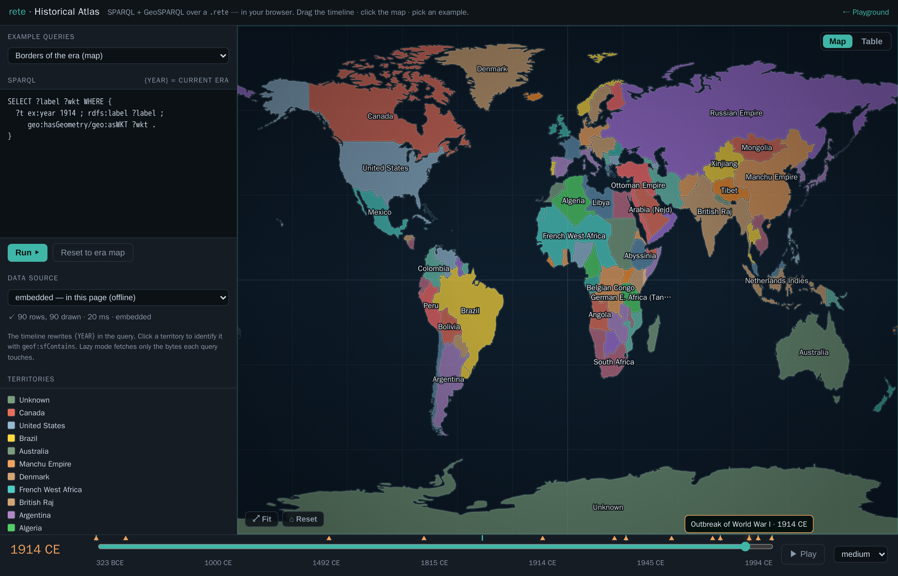
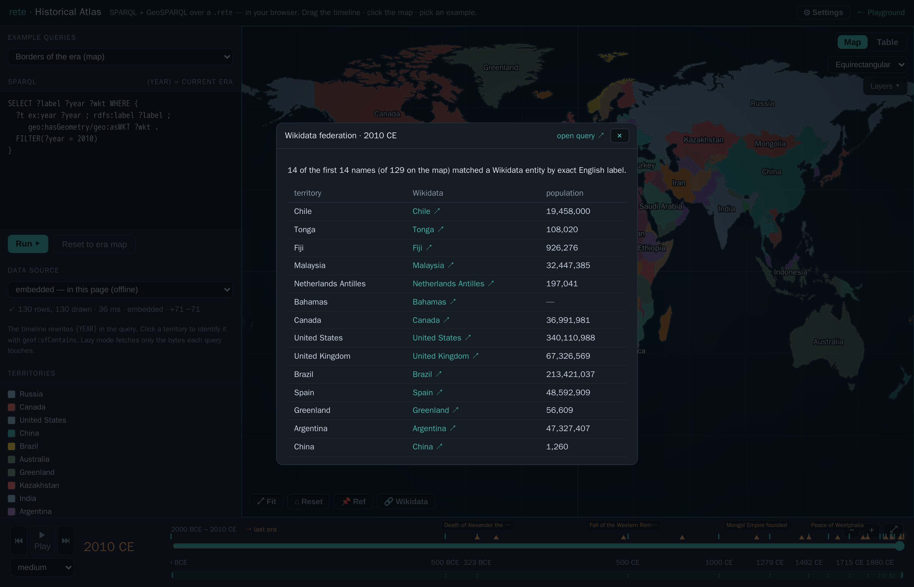
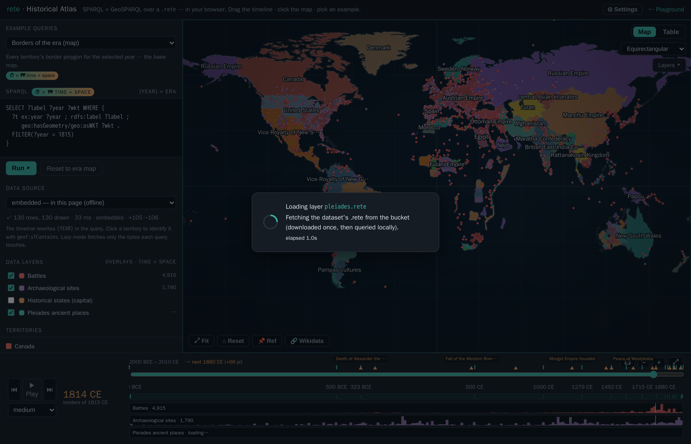
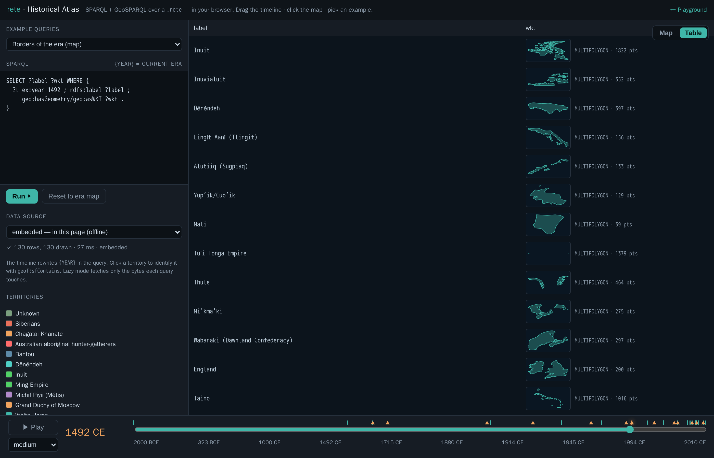
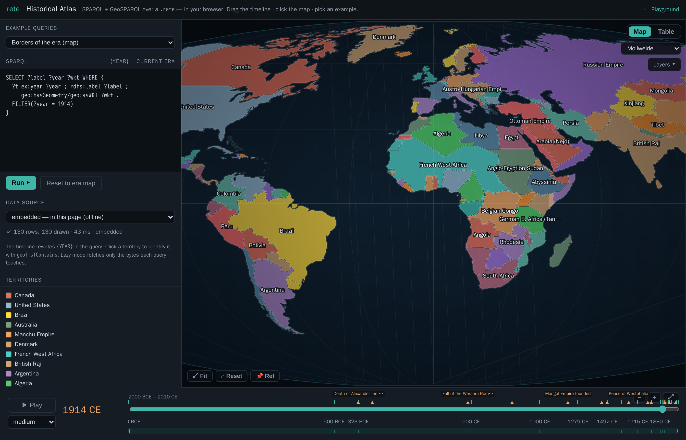
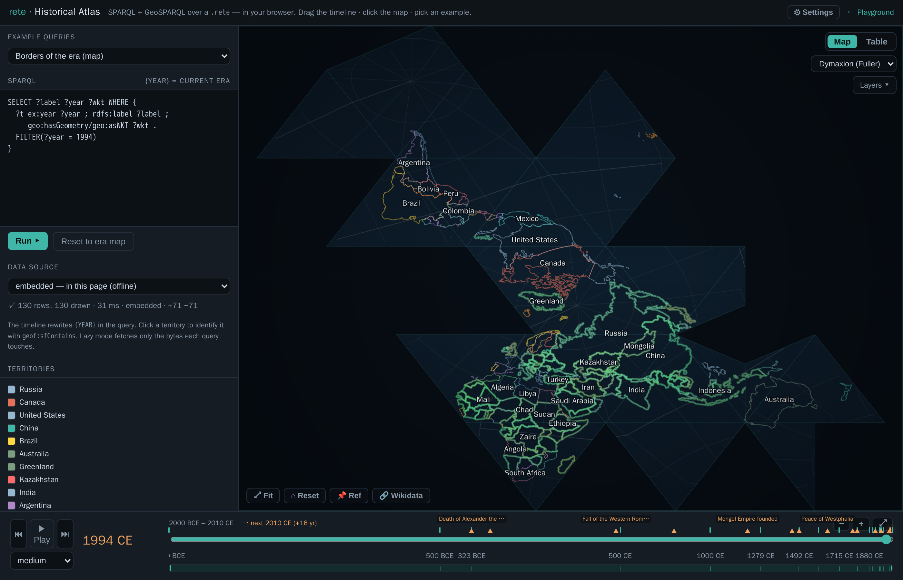
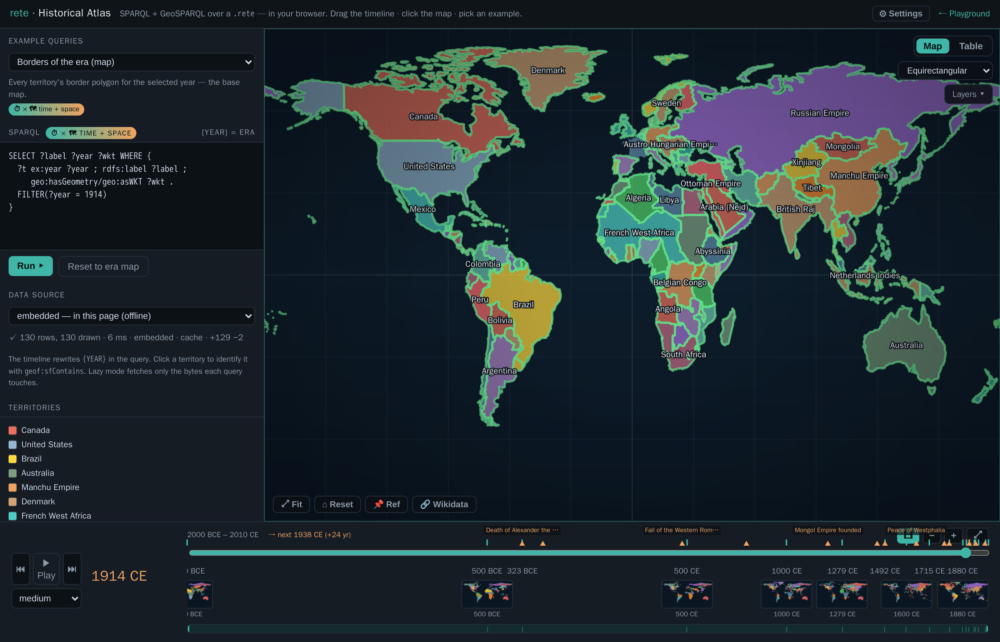

Historical Atlas — SPARQL + GIS over time
▸ Launch the atlas — a single, fully static HTML page. No
server, no database, no map tiles, no build step: the whole thing runs in your
browser over a .rete file through the WebAssembly engine — either the copy
embedded in the page (offline) or the same file streamed from remote
storage by HTTP range.
It is half SPARQL, half GIS: a query editor on the left, a world map in the centre, and a temporal timeline along the bottom. Pick one of the bundled example queries, drag the timeline and the borders of the world cross-fade to that era, hit ▶ Play to sweep through history, or click anywhere on the map and it names the territory under your cursor. The map is a dependency-free canvas — a curated palette, an ocean gradient, decluttered on-map labels, hover/selection highlighting, cursor-locked wheel zoom (to 64×, the world stays in view) with a HUD showing the zoom level, the viewport's corner coordinates and a live cursor read-out, an on-map legend of the active overlays, zoom-to-fit (and keyboard timeline nav) — drawn entirely from query results.

history.rete, drawn on a dependency-free canvas. Left: the example picker, the live query, the data-source selector, and the territory legend. Bottom: the era timeline, with historical-event markers (hover for a tooltip).What you're looking at
The dataset is history.rete — world territorial borders at eighteen snapshots
from 2000 BCE to 2010 CE (aourednik/historical-basemaps,
GPL-3.0). Each border is stored as a GeoSPARQL geo:wktLiteral polygon with an
integer ex:year, so a snapshot is just FILTER(?year = …) and the geometry is
whatever your query binds to ?wkt.
How it works
- The map is driven by SPARQL. The editor holds a query; every row it
returns that binds
?wktis parsed (a tiny in-page WKT reader) and drawn — so you can swap in any query: a bboxgeof:sfIntersects, ageof:distanceranking, ageof:envelope, aFILTERon the label, anything. The example picker ships ten ready-made queries, including several that ask time × place questions: Who ruled Paris? — every era (onegeof:sfContainspoint, no year filter, ordered through history), Transcontinental — touches Europe AND Asia (twosfIntersects), Within 2500 km of Rome, and Territories per era (aGROUP BY ?yearcount over all of time). Each example carries a plain-language description and a time / space tag, and the SPARQL header shows a live ⏱ × 🗺 time + space badge whenever a result carries both a year-like column and a geometry — so you can see at a glance what a query outputs, not just what it says. - The timeline is the temporal control — and it adapts to the data. It runs
year-by-year from 2000 BCE to 2010 CE; the eighteen
ex:yearsnapshots and a row of labelled historical-event markers (death of Alexander, fall of Constantinople, 1789, 1914, the fall of the USSR…) sit on the track — hover for the full name, click to jump (arrow keys nudge ±1/±10 years; Space toggles play). Because the data is discrete, ▶ Play steps era to era (each press visibly cross-fades to the next snapshot; the speed select is the dwell per era), and ⏮ / ⏭ jump one snapshot at a time with a "→ next 1492 CE (+213 yr)" readout. Zoom the axis with＋/－/⤢, with the mouse wheel (vertical = zoom, horizontal = pan), or by dragging the context strip beneath it — move the window to pan, drag its edges to zoom (the dense modern eras spread out as you zoom in). A 🎞 previews toggle drops a filmstrip of mini-maps under the track — a thumbnail of the world's borders at each snapshot, decluttered so close eras collapse to the first until you zoom in. - Changes are highlighted as they happen. When the era changes, the map
cross-fades and flags the difference: territories that appear glow
green (and pulse briefly once they've settled), ones that disappear glow
red as they fade out, and the status line tallies the delta (e.g.
+87 −125). - Two views of every result. Map draws the polygons; Table shows the
raw result rows — and any cell holding a
geo:wktLiteralrenders an inline geometry thumbnail (its kind, vertex count, lon/lat extent, and faint equator / prime-meridian guides) with view (the raw WKT in a panel) and copy buttons. So ageof:distanceranking reads as an ordered list and a borders query reads as a column of little shapes you can inspect. - Re-project and toggle layers. A projection dropdown re-draws the whole map in Equirectangular, Web Mercator, Mollweide, Sinusoidal, or the Dymaxion (Fuller) icosahedral net (the graticule curves and the land is clipped to the world's shape; click-to-identify keeps working through each projection's inverse — even Dymaxion's per-face gnomonic inverse). A Layers menu toggles the fill, labels, graticule, glow, and event markers.
- Click to identify — with metadata. A click runs
geof:sfContainsfor the current era against every border polygon and opens a panel for the territory under the point — its name, year, and the rest of its properties (partOf,subjectTo, type…) straight from the graph. Clicking North Africa in 1000 CE returns Fatimid Caliphate; French West Africa in 1914 shows partOf France · subjectTo France. - Pin a reference era to compare. 📌 Ref pins the current borders as a translucent amber overlay; navigate to any other era and the two are superimposed, so you can see directly how the map changed between them.
- Pick where the data lives. The data-source selector runs the same
queries three ways: embedded (the
.retebaked into the page, fully offline), remote · lazy (the file stays on remote storage and each query faults in only the byte ranges it touches, over a Web Worker), or remote · cached (download the file once — with a progress bar — then query locally). It's the "simple file, remote; logic in the browser" story made switchable. Slow operations (a lazy query, the cached download) show a loader that explains what's happening; identical queries are cached (re-running is instant), and a ⚙ Settings modal inspects/clears the query cache and the cached.rete. - Federate with Wikidata. This app predates engine-level
SERVICE(now shipped — see sparql), so its federation is done client-side: the identify panel's 🔎 Wikidata button looks an entity up by name, and 🔗 Wikidata runs a real federated SPARQL query — it feeds the era's territory names asVALUESinto a query against query.wikidata.org, joins the matches back, and shows each territory's Wikidata entity + population (works best on modern eras; it's online-only and fuzzy on historical names). - Stack data-layer overlays — across many providers, with real lifespans.
Beyond the borders, you can switch on 83 extra datasets as overlays,
including a five-layer Antarctica set — territorial-claim sectors as dated
wedges (British 1908 → Argentine 1942), research stations (founded→present),
people who died on the ice (Scott's party, 1912), Historic Sites & Monuments
(Amundsen's Polheim tent, Mawson's huts), and the ~20k-feature SCAR
Composite Gazetteer (the authoritative Antarctic place-name map) — plus the
other seven sources: Wikidata (CC0), DBpedia (conflicts and
power plants — the same GeoSPARQL shape from a second SPARQL endpoint),
OpenHistoricalMap (CC0; OSM features dated by their
start_date/end_datetags, fetched via Overpass — and drawn as their real geometry: historical boundaries as polygons, routes as lines, places as dots), Nomisma.org (CC-BY; ~10k ancient coin types placed at their mints, deep into BCE), FactGrid (CC0; an independent historical Wikibase with its own property space), Theographic (CC-BY-SA; biblical events located and dated), and Samian ware (Roman terra-sigillata potters at their production centres). The base four are Battles, Archaeological sites, Historical states and Pleiades ancient places. Crucially, things that persist — buildings, institutions, polities, OHM features — are modelled as a lifespan[startYear, endYear](founded → demolished/dissolved/closed, or to "present" when still standing) and shown across that whole span, while point-in-time events keep a single year. The Wikidata themes (CC0) span conflict (military operations, sieges, massacres, terrorist attacks, coups, revolutions, assassinations, nuclear explosions), disasters (earthquakes, volcanic eruptions, tsunamis, floods, wildfires, explosions, aviation & rail accidents, epidemics, meteorite falls, shipwrecks, landslides), built heritage (castles, forts, fortifications, palaces, cathedrals, churches, monasteries, abbeys, mosques, synagogues, temples, towers, lighthouses, city gates, bridges, dams, aqueducts, canals, windmills, amphitheatres, pyramids, megaliths, monuments, memorials), and institutions & industry (universities, museums, libraries, hospitals, theatres, observatories, stadiums, prisons, mines, factories, power stations, breweries, shipyards, airports, railway stations, cemeteries, gardens, botanical gardens, World Heritage Sites), as well as treaties, expeditions and polities. Each is a separate.retefetched once from the bucket, queried locally, and dotted on the map in its own colour, filtered to the scrub year (events within a window of the playhead; places active across their[startYear,endYear]). Each active layer gets a histogram track beneath the timeline — like a clip in a video editor — showing when its data is concentrated, with a playhead. Every theme is reproducible from one query/recipe each — seescripts/fetch_wikidata_themes.sh(Wikidata, instantemit+ intervalemiti),scripts/fetch_dbpedia_themes.sh(DBpedia),scripts/fetch_ohm.sh+scripts/ohm_overpass_to_nt.py(OpenHistoricalMap),scripts/fetch_atlas_extra.sh(Nomisma / FactGrid / Getty TGN SPARQL), andscripts/fetch_dumps_extra.sh+scripts/{theographic,samian}_to_nt.py(the GitHub-dump providers). Because a layer is a SPARQL query, the ＋ button lets you author your own — name it, pick a colour and instant/interval kind, point it at the embedded borders (offline) or any bucket.rete, and write theSELECT … ?wkt. The layer list is scrollable and drag-to-reorder (which sets draw order), and clicking any overlay feature opens an info card with its label, date/span, layer, coordinates and source IRI. Your scene — year, projection, active and custom layers, view — is remembered inlocalStorageacross reloads, and 🔗 Share copies a link that encodes the whole view in the URL hash (#s=…), so a custom-layer setup is reproducible by anyone who opens it (the restore path hard-sanitises the incoming state). 📑 Views saves, loads and deletes named scenes; Shorten link turns the (long) state link into ada.gdshort URL (using?s=so the redirect keeps the state, since shorteners drop the#fragment); and Reset session (in ⚙ Settings) clears the saved state back to defaults while keeping your named views.

VALUES into a SPARQL query run against Wikidata's public endpoint, then joined back — each territory linked to its Wikidata entity with population. (This app does the join in the browser; the engine now also supports SERVICE directly.)
.rete files dotted over the 1815 borders, each with a histogram track beneath the timeline (the "video-editor layer" view) showing when its events cluster. Toggle layers on/off; points follow the scrub year.
geo:wktLiteral cell renders an inline geometry thumbnail (kind + vertex count + lon/lat extent) with view/copy buttons, so the result set reads as a column of little shapes, not opaque WKT strings.

geoAirocean). Each point is gnomonically projected onto its icosahedral face; territory edges are broken at the net's cut seams, and clicking still identifies the country via the exact per-face inverse.
Everything is computed by the same Rust engine that powers the CLI, compiled to WebAssembly — see GeoSPARQL for the spatial functions and Browser / WASM for how the engine runs client-side (including the lazy HTTP-range reader).
Build it yourself
The page is assembled by inlining the no-modules WASM engine and the embedded
.rete into a template (the same offline-only pattern as the playground); the
remote lazy/cached modes point at the same file served by HTTP range:
# 1. the embedded dataset (simplified to an in-browser-sized ~1.5 MB file)
python3 scripts/geo_to_rete.py basemaps \
--years bc2000,bc500,bc323,500,1000,1279,1492,1600,1715,1815,1880,1900,1914,1938,1945,1960,1994,2010 \
--prec 3 --min-bbox 0.12 --max-per-year 130 -o dev/geo/history.nt
rete build dev/geo/history.nt -o web/history.rete
# 2. the browser engine, then the page
wasm-pack build crates/rete-wasm --target no-modules --out-dir ../../web/pkg-nomodules
python3 scripts/build_atlas.py # → docs/atlas-app.html